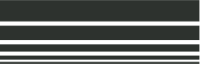

Kiekvienas kūrinys gimsta iš antrinio gyvenimo – iš medžiagų, kurios jau buvo, tarnavo, dėvėjosi. Metalas, betonas, stiklas – šaltos, tvirtos, brutalios substancijos, perdirbtos ir prikeltos naujam etapui.
Šviesa čia tampa jungtimi tarp priešybių. Ji įsiskverbia į kietą paviršių, pramuša grubumą ir sukuria šilumos pojūtį.
Tai ne tik dizaino objektai. Tai tylūs kontrasto įsikūnijimai – tarp praeities ir dabarties, tarp šalčio ir šviesos, tarp daikto ir naujos jo paskirties.
glosto@akis.lt || +370 64 736 093
[Vilnius]